Das ist gar nicht so schwierig, wie Sie vielleicht denken würden.
Für diese Anleitung verwende ich das Programm VirtualBox, welches kostenlos für Windows, Linux und MacOS erhältlich ist. Bitte installieren Sie dieses Programm, bevor Sie weiterfahren.
Besorgen Sie sich ein ISO-Abbild von manjaro-linux xfce 64 Bit (Ausser, Wenn Ihr Computer nur einen 32-Bit Prozessor hat. Aber dann sollten Sie sich sowieso überlegen, ob Sie diesen Computer verwenden wollen)
Starten Sie VirtualBox und klicken Sie oben auf "Neu". Es erscheint folgendes Fenster:

Für den Namen können Sie etwas Beliebiges einsetzen, die anderen beiden Optionen setzen Sie bitte wie hier genannt, und klicken Sie dann auf "weiter".

Wieviel RAM Sie Ihrer Maschine spendieren können, hängt in erster Linie davon ab, wieviel Sie in ihrem Computer physikalisch installiert haben. Geben Sie maximal Ihr installiertes RAM minus 4 GB, wenn Sie nur eine VM gleichzeitig laufen lassen. Geben Sie aber nicht weniger, als 1 GB (entgegen der Empfehlung von VirtualBox: Wir wollen ja nicht nur, dass das Betriebssystem gerade so eben läuft, sondern es soll auch arbeiten).
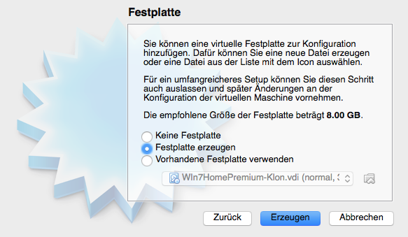Für die Festplatte können Sie alle Vorgaben übernehmen.
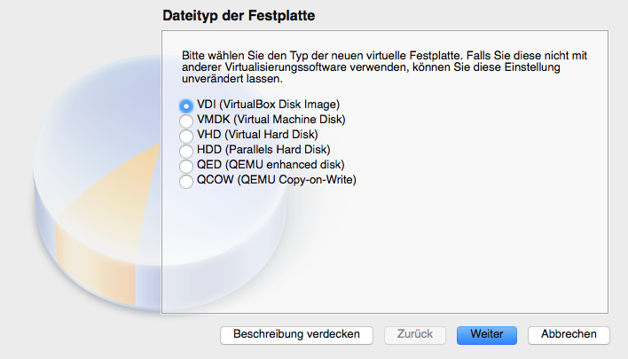Auch hier übernehmen Sie die Vorgabe, ausser wenn Sie gute Gründe haben, einen anderen Typ auszuwählen.
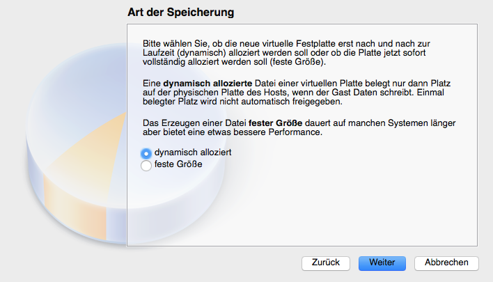Dynamisch ist besser, weil dann die Platte nicht sofort ihre volle Grösse erreicht, sondern allmählich ztum Maximum hin wächst, wenn es nötig ist.

Als Name für die Festplatte bietet sich derselbe Name wie für die VM an. Die Voreingestellte Grösse ist ok. Wie gesagt, die Platte wird nicht sofort in dieser Grösse erzeugt.
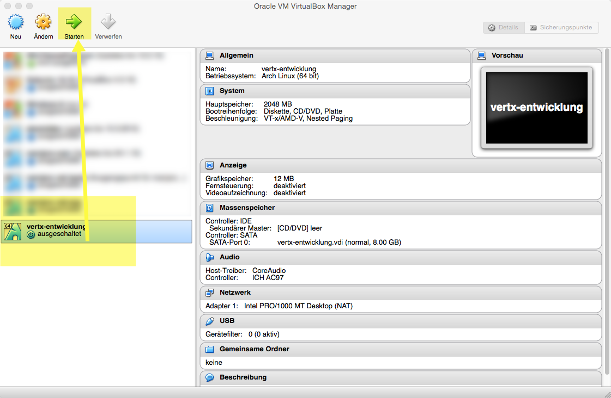Danach können Sie die virtuelle Maschine erstmals starten. Beim ersten Start mit nagelneuer Festplatte, wird sie nach einer CD verlangen.
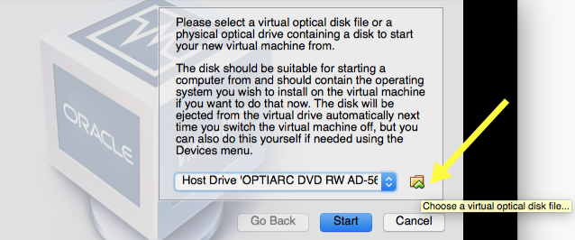Klicken Sie auf das kleine Icon rechts neben dem Auswahlfeld, um eine virtuelle CD auszuwählen
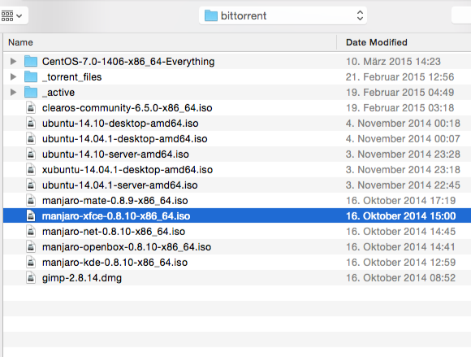Wählen Sie Ihre vorher heruntergeladenene Manjaro-Image-Datei aus...
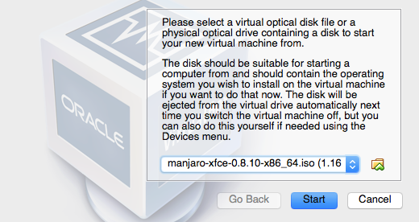...und klicken Sie dann auf "start".
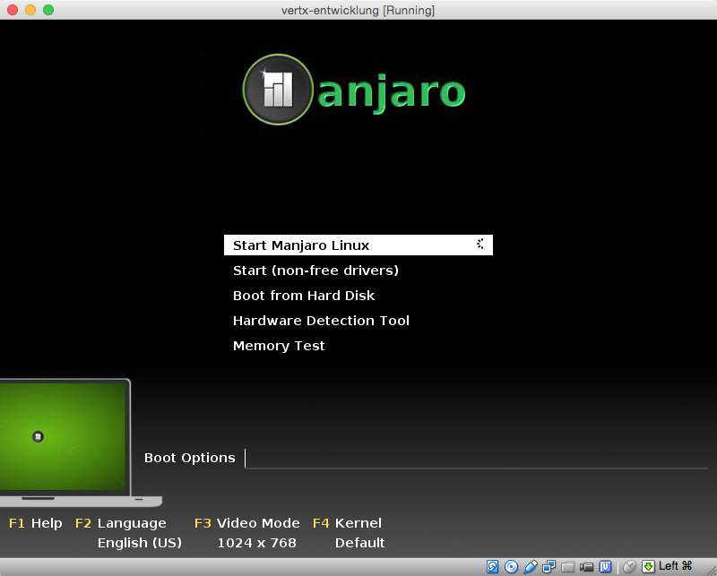Drücken Sie entweder <EINGABETASTE> oder warten Sie einen Moment, dann startet manjaro von allein.
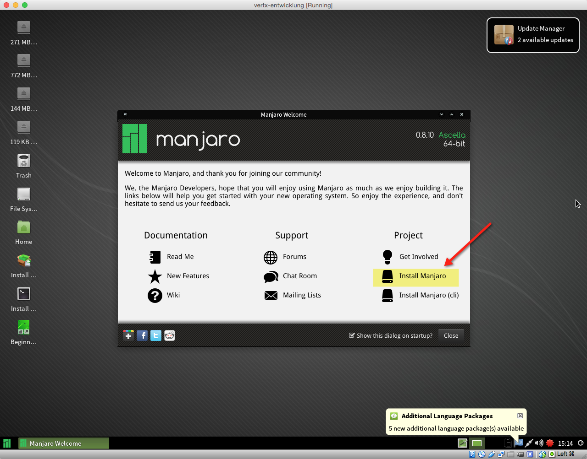Was Sie jetzt haben, ist eine von CD gestartete Manjaro Version. Um diese auf Ihre virtuelle Festplatte zu installieren, klicken Sie auf "Install Manjaro"
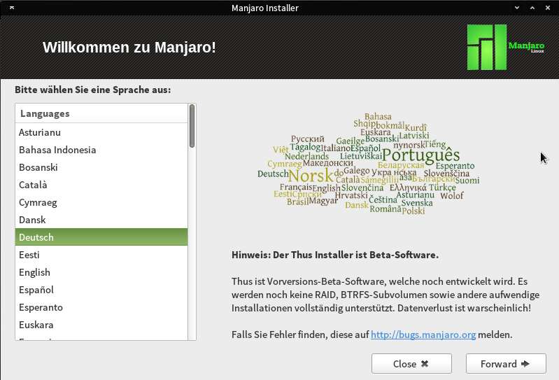Wählen Sie Ihre gwwünschte Sprache (Achtung, wenn Sie eine Sprache wählen, die nicht Ihrer geographischen Lage entspricht, wird es nachher etwas schwieriger, die richtige Tastatur auszuwählen)
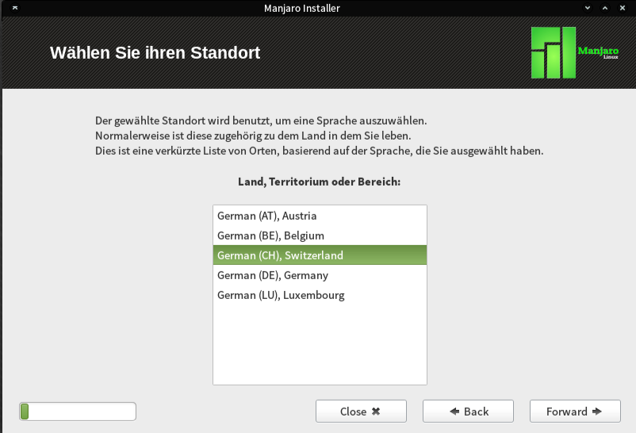Auch hier ist es am Einfachsten, wenn Sie Ihren wirklichen Standort angeben.
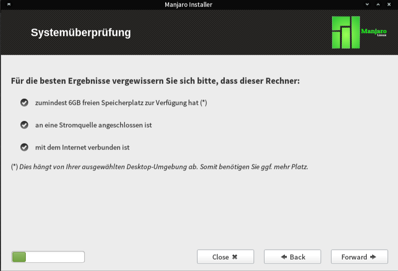Hier gibt es nichts auszuwählen, aber es sollten alle Häkchen gesetzt sein.
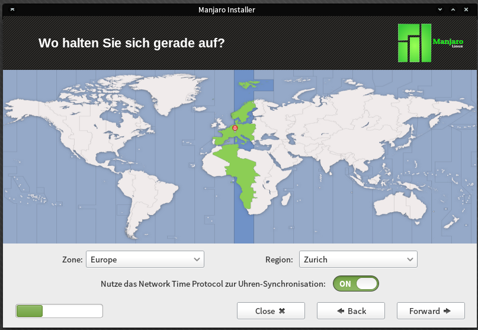Machen Sie, was Sie wollen, aber am Einfachsten wird die Konfiguration, wenn Sie einen Ort in Ihrer Nähe auswählen.
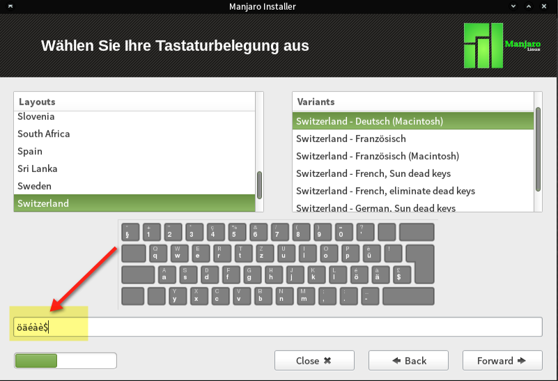Wählen Sie Ihre Tastatur aus. Wenn Sie nicht sicher sind, können Sie im Feld unten testen, ob vor Allem Umlaute und Sonderzeichen korrekt ankommen.
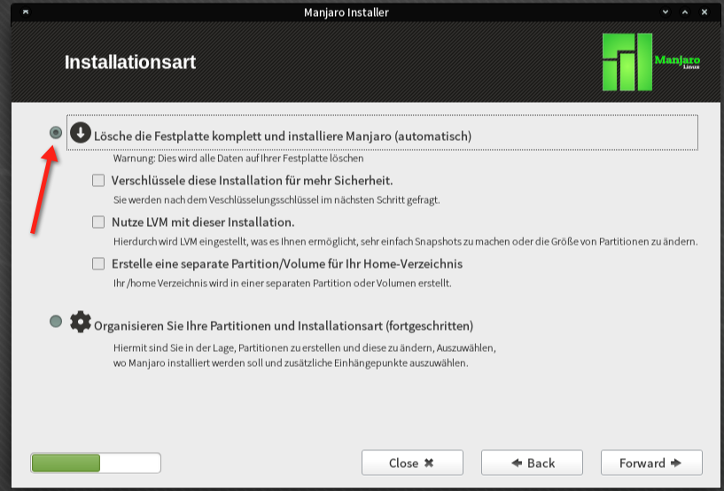Wählen Sie hier am besten die Vollautomatische Variante. Keine Angst: Die Rede ist hier nur von der virtuellen Festplatte, die Sie vorhin eingerichtet haben. Wenn Sie alles so gemacht haben, wie oben angegeben, dann kann die Manjaro-Box Ihre echte Festplatte nicht einmal "sehen", geschweige denn etwas daran verändern.
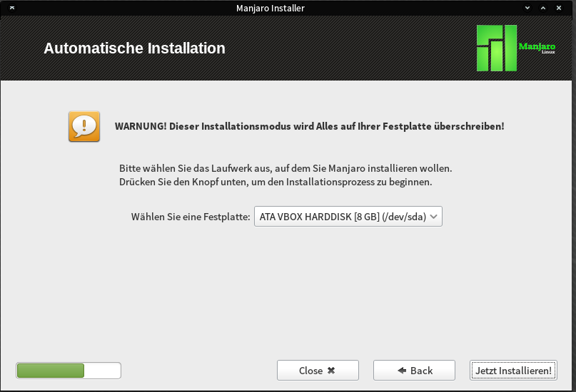Daher können Sie auch diese Warnung getrost ignorieren.
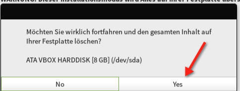Und auch diese. Klicken Sie auf "yes"
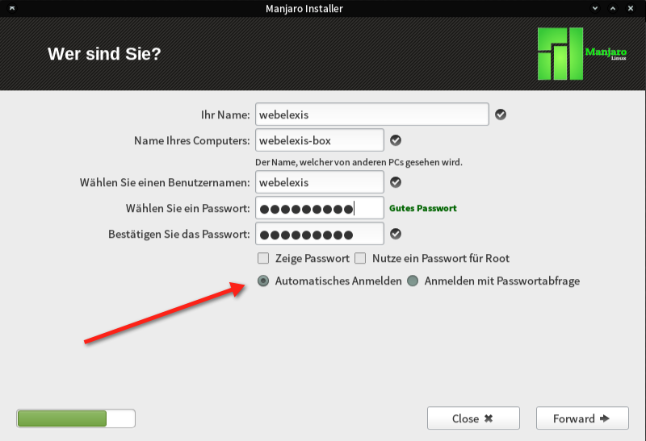Hier dürfen Sie Ihrer Kreativität freien Lauf machen. Das Passwort muss nicht unbedingt eahnsinnig sicher sein, da diese Virtuelle Maschine ohnehin nur für Leute zugänglich ist, die auf den Wirtscomputer Zugriff haben. Ich würde deshalb auch "automatische Anmeldung" wählen, damit man nicht jedesmal das Passwort eingeben muss. Wählen Sie trotzdem ein Passwort, an das Sie sich erinnern können, denn Sie müssen es zum Beispiel für Systemupdates eingeben.
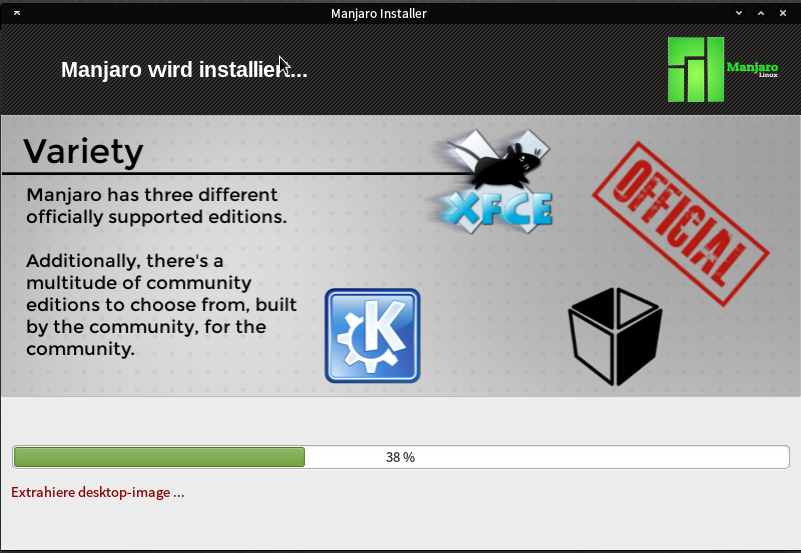Danach läuft die Installation durch, das wird einige Minuten dauern.
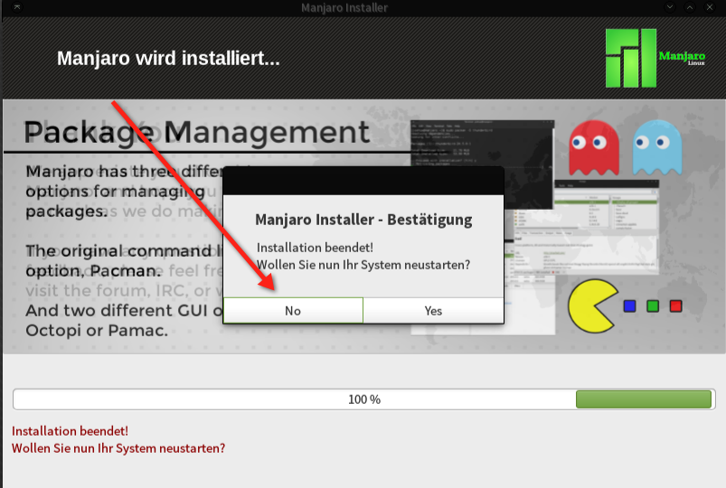Die Rückfrage, ob Sie das System neustarten wollen, sollten Sie besser verneinen, denn sonst startet es gleich wieder von der CD. Klicken Sie also nein und stattdessen...
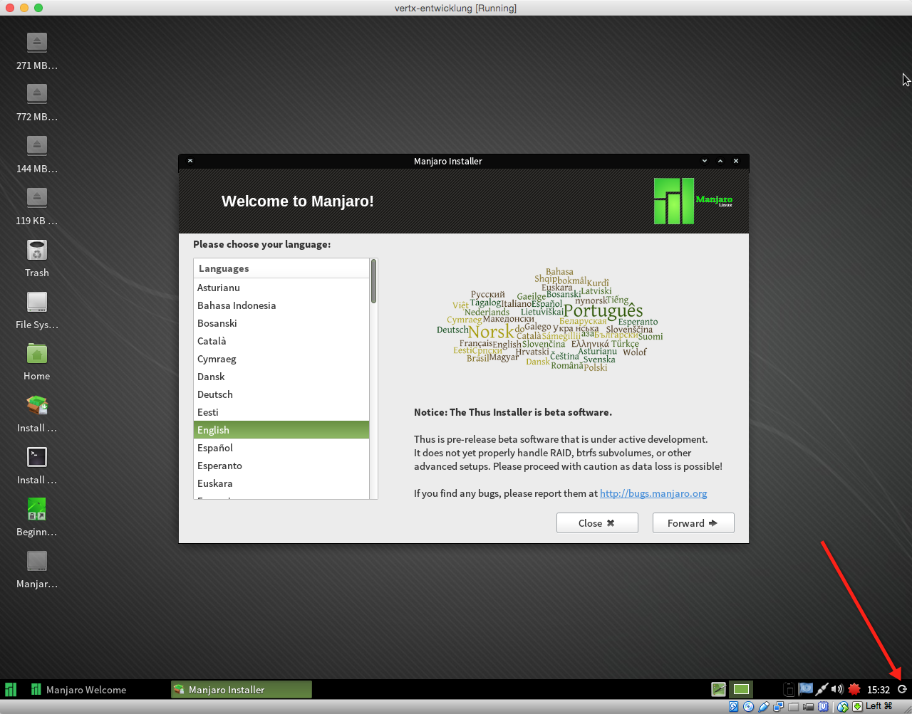...fahren Sie das System herunter, indem Sie das Icon ganz rechts unten auswählen und dann..
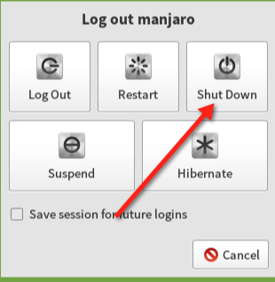...shut down klicken
Nun sollten Sie die virtuelle Manjaro-CD "auswerfen", damit das System von der virtuellen Festplatte starten kann. Klicken Sie dazu in VirtualBox auf "ändern"
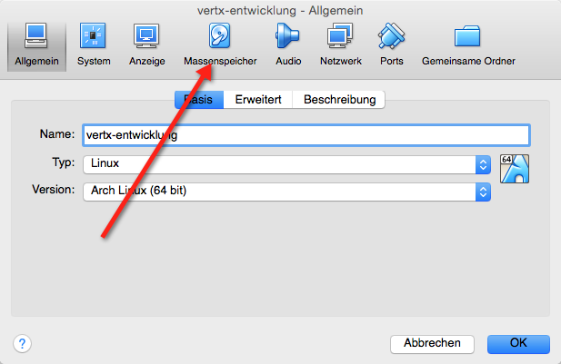Dann auf "Massenspeicher"
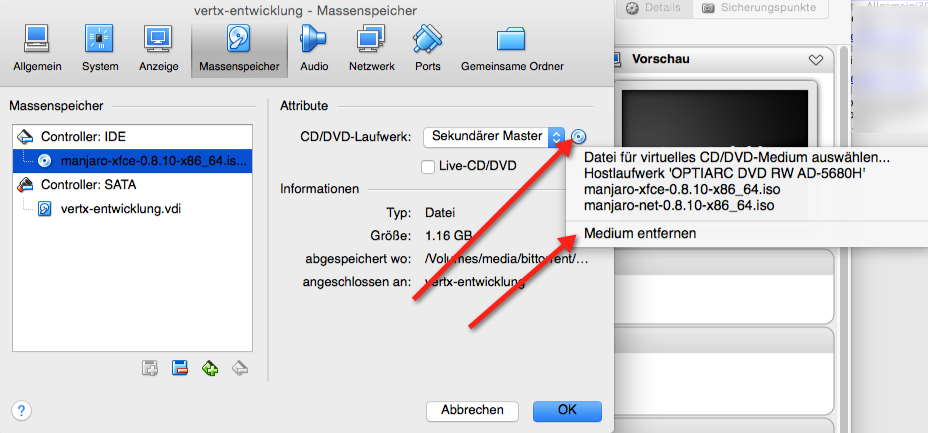Nach Klick auf das CD-Symbol können Sie das Medium auswerfen. Danach klicken Sie wieder auf "Start"
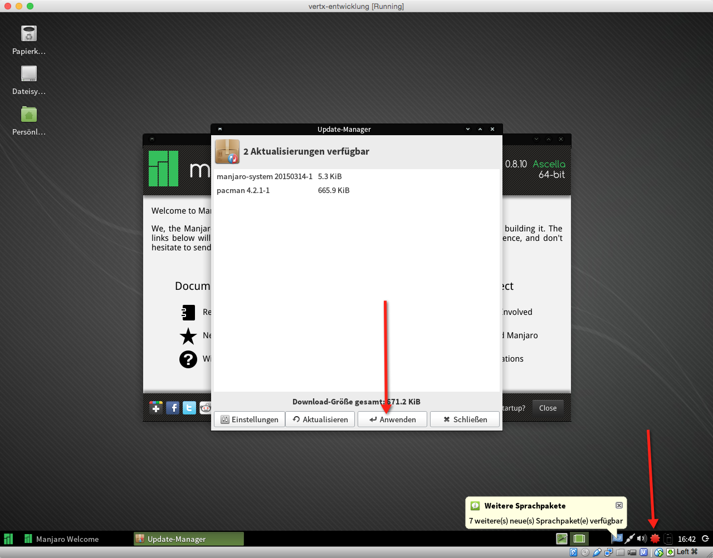Nach dem ersten Start wird LInux sich updaten wollen, da das CD-Image zwangsläufig nie ganz auf dem neuesten Stand ist. Und hier kommen wir zu einem etwas unglücklichen Kapitel: Diese Update-Funktion scheitert öfters. Aber versuchen Sie es ruhig, klicken Sie auf "Übernehmen". Wenn es geht, ist okay, und sonst machen Sie es eben manuell: Rechtsklicken Sie auf den roren Punkt in der unteren Zeile und wählen Sie "beenden". Öffnen Sie dann ein Terminal (Links im Hauptmenü klicken und "Terminal" auswählen)
Als Erstes würde ich Ihnen empfehlen, jetzt einen "Snapshot" des eben installierten Systems zu erstellen. Das geht im VirtualBox-Menü der laufenden Maschine unter "Machine - Take Snapshot" (Nicht verwechseln mit dem gleich daneben liegenden "Take Screenshot"). Die Idee des Snapshots ist: der momentane Zustand der virtuellen Maschine wird gespeichert. Wenn später irgend etwas schief geht, kann man jederzeit wieder zu diesem Punkt zurückkehren.
Geben Sie dann im Terminal folgendes ein:
sudo pacman -Syu
Danach werden Sie nach Ihrem Passwort gefragt. In einem ersten Sxhritt werden oft die Paket-Datenbanken und Schlüssel aktualisiert. Eventuell wird Manjaro Ihnen hin und wieder Fragen stellen, ob es etwas Bestimmtes tun soll. Im Allgemeinen können Sie die Vorschläge des Systems übernehmen. (Wenn etwas nicht klappt, ist es auch keine Katastrophe, dann starten Sie den Prozess pacman -Syu eben noch einmal. Und schlimmstenfalls können Sie zum Snaphsot zurückkehren.
Wenn der Pacman-Prozess das erste Mal durchgelaufen ist, starten Sie ihn noch einmal. Jetzt kommt die eigentliche Systemaktualisierung. Diese kann recht lange dauern, je nachdem, wieviel Zeit seit der Erstellung des Iso-Images vergangen ist.
Im Gegensatz zu Ubuntu und SuSE hat Manjaro ein "rolling release". Das heisst, Sie müssen nach diesem ersten Mal nie mehr ein komplettes Systemupdate machen. Sie geben einfach ab und zu im Terminal sudo pacman -Syu ein, und das System bleibt immer aktuell.
Nun sind Sie bereit für das, weshalb Sie überhaupt angefangen haben, diesen Text zu lesen: Selber bauen von Webelexis. Lesen Sie die Anleitung dafür hier.